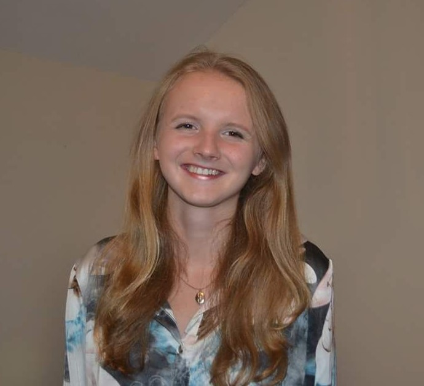
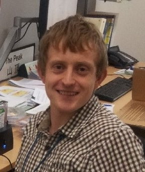

Advisees
Current
Frank Kpoglu
PhD Student (2025-Present)
Topic : Dynamic Representation Learning with Graph Neural Networks for Early Warning Systems in Evolving Spatio-Temporal Structures under Uncertainty
Supervisors : Jawad Fayaz and Edward Keedwall (UoE)
Frank is a PhD student in Computer Science at the University of Exeter, UK. His research focuses on designing novel graph neural network models that can capture complex spatio-temporal dependencies to enable robust early warning systems in domains such as seismic monitoring, water infrastructure, and environmental risk prediction. By integrating uncertainty quantification and adaptive learning, the research aims to advance both the theoretical foundations of GNNs and their practical deployment in real-world critical systems.
Alireza Bafti
PhD Student - QUEX (starting 2026)
Topic : Harnessing Remote Sensing for Automatic Monitoring of Pit Lakes
Queensland Supervisors : Neil Mcintyre (UoQ) and Nevenka Bulovic (UoQ)
Exeter Supervisors : Jawad Fayaz and Sareh Rowlands (UoE)
Alireza is a QUEX PhD student at the University of Queensland, Australia, and the University of Exeter, UK. His research combines GIS programming with advanced deep/machine learning and remote sensing to monitor key hydrological variables, including flooding, drought, soil moisture, and evapotranspiration. His work applies machine learning to develop automated remote sensing approaches for detecting and monitoring pit lakes, supporting improved understanding of their hydrological and chemical dynamics.
Past

Dr. Lauren McMillan
PhD Student (2021-2024)
Topic : Artificial Intelligence–Enabled Self-Healing Infrastructure Systems
Currently : Lecturer in Civil Engineering at Northumbria University, UK
Supervisors : Liz Varga (UCL) and Jawad Fayaz
Lauren completed her PhD in Civil, Environmental, and Geomatic Engineering at University College London (UCL), UK. Her research focused on enhancing the resilience and sustainability of critical infrastructure systems through systems-based, data-driven methods. She developed intelligent, data-driven solutions for each phase of leakage management—anticipation, detection, and restoration—envisioning a self-healing system.
These solutions were trained and tested on a dataset of over 2,000 district-metered areas managed by a UK water company. This approach provides a rapid and cost-effective method for identifying potential leaks, offering benefits such as increased infrastructure resilience, optimized repair strategies, and improved consumer confidence, which together promote sustainable demand-side behaviours.

2 x Project Data Scientist (2025-2025)
Topic : Bayesian Machine Learning Framework for Probabilistic Hazard Decision-Making
Supervisors : Jawad Fayaz, Steven Ramsdale (MET Office), Andrew Howes (UoE), and Helen Roberts (MET Office)
Two postgraduate Data Scientists worked on the development of a probabilistic simulation environment of vulnerability parameters for training reinforcement-learning-based impact-based decision-making agents for natural hazards. The project explicitly integrated physical susceptibility, socioeconomic vulnerability, community preparedness, and recovery capacity, using Bayesian hierarchical modeling to address uncertainties and enhance decision-making realism. This approach aimed to produce a robust and evidence-based framework that improves proactive risk management and emergency response capabilities.
Alfie Wright
MSc Student (2025-2025)
Topic : Generative Modelling for Simulating Earthquake Ground Motions Spectra using Process-Informed Artificial Neural Networks
Supervisor : Jawad Fayaz
Alfie is a graduate student in Data Science and Artificial Intelligence at the University of Exeter, UK. His research focuses on developing process-informed artificial-neural-networks-based generative models to simulate response spectra of earthquake ground motions. By incorporating key seismic features such as earthquake magnitude, epicentral distance, and site's soil shear-wave velocity, his work aims to generate realistic ground motions that could enhance earthquake early warning systems and seismic risk assessment.
Yu Weng
MSc Student (2025-2025)
Topic : Graph Neural Network-Based Decision Support System for Management of Water Distribution Systems
Supervisor : Jawad Fayaz
Yu is a graduate student in Data Science at the University of Exeter, UK. Her research focuses on developing a graph neural network (GNN)-based decision support system for the management of water distribution systems, and her research aims to develop GNNs for modelling spatio-temporal dynamics of water distribution networks. Through this data-driven and deep-learning based approach, she seeks to improve the reliability, efficiency, and sustainability of water systems by reducing water losses, energy utilization, and maintenance costs.
Anjana Shivananda
MSc Student (2025-2025)
Topic : Machine Learning Modelling for the Prediction of Crop Yield Productivity
Supervisors : Jawad Fayaz and Paul Harris (Rothamsted Research)
Anjana is a graduate student in Advanced Computer Science at the University of Exeter, UK. Her research, in collaboration with Rothamsted Research, focuses on developing an AI-driven model to predict crop yield by integrating datasets on soil moisture, weather, management practices, and satellite data. The model aims to improve yield forecasts and assess the impact of climate extremes on agricultural productivity.
Zak French
MSc Student (2025-2025)
Topic : Bayesian Machine Learning Framework for Forecasting Water Demands in Real-Time
Supervisor : Jawad Fayaz
Zak is a graduate student in Data Science at the University of Exeter, UK. His research focuses on developing a predictive model for water demand, comparing both temporal and spatial modelling approaches. By utilizing real-time data and historical patterns, he incorporates factors like seasonal variations whilst leveraging Bayesian statistics and machine learning techniques with the aim of enhancing forecasts of water flow demands to ultimately support better water resource management in communities.
Ben Shaw
MSc Student (2025-2025)
Topic : Deep Learning Framework for Real-Time Flow and Leakage Prediction in Water Distribution Networks
Supervisor : Jawad Fayaz
Currently : Data Scientist at TUI Group
Ben is a graduate student in Digital Technology Solutions (DTS) at the University of Exeter, UK. His research focuses on developing deep learning architectures to model flow rates and predict leakages in UK water distribution networks. His work aims to advance the development of more sustainable, autonomous water systems, reducing water loss and improving overall efficiency in distribution networks.
Ethan Ray
MSci Student (2024-2025)
Topic : Spatio-Vectorial Modelling of Earthquake Intensity Measures using Graph Neural Networks
Supervisor : Jawad Fayaz
Ethan was a graduate student in Computer Science and Mathematics at the University of Exeter, UK. His research centered on using graph neural networks to model spatial variability of earthquake intensity measures, intending to advance emergency response, infrastructure resiliency, and risk mitigation. His research predicted the spatial distribution of the vector of intensity measures using the ground motions recorded through a network of sensors. His approach integrated spatial and temporal modelling of earthquake waves through advanced machine learning to support timely, data-informed decisions that can improve safety and reduce impacts in earthquake-prone areas
Angelo Palmer
MSci Student (2024-2025)
Topic : Decision-Making System for Leakage Repair in Urban Water Networks using Deep Reinforcement Learning
Supervisor : Jawad Fayaz
Angelo was a graduate student in Computer Science at the University of Exeter, UK. His research focused on developing a decision-making model for urban water network maintenance, aiming to reduce the economic and environmental impact of avoidable water loss. His interdisciplinary work involved analysing data from predictive models, utilising deep reinforcement learning techniques to train decision-making agents, and deploying said agents in a system that can be used by non-specialists in a commercial environment to enhance the management and maintenance of water networks.
Martin Rapp
MSc Student (2024-2025)
Topic : Early Warning Systems for Leakage in Water Distribution Networks using Unified Temporal Fusion Transformers to Enable Real-Time Decision-Making
Supervisor : Jawad Fayaz
Currently : Data Management Analyst at UBS Group AG
Martin completed his MSc in Data Science at the University of Exeter, UK. His research focused on time-series modelling and machine learning-based predictive modelling for water distribution management. His area of interest included the forecasting of water leakages and water flow demands, helping decision-makers to take preventative action. This work aligns with supporting water companies in meeting Ofwat and the UK government's future leakage reduction targets as well as leveraging new technologies to contribute to healthier management of water distribution.
Jay Howard
MSc Student (2024-2025)
Topic : Deep Learning-Based Structural Health Monitoring of Offshore Wind Turbines using Functional Accelerometer Data
Supervisor : Jawad Fayaz
Currently : Lead Software Engineer (Vice President) at JPMorgan Chase
Jay completed his MSc in Data Science at the University of Exeter, UK. His research centered on the structural health monitoring of offshore wind turbine blades through deep learning modelling. By leveraging convolutional, recurrent, and transformer neural networks, Jay developed advanced neural network architectures that enhance the reliability and efficiency of wind energy systems. His interdisciplinary work involved time-series analysis for real-time prediction and detection of damage to the turbines, ultimately contributing to the efficient management and maintenance of offshore wind turbines.

Simon Tucker
MSc Student (2024-2025)
Topic : Emulation of a Regional Climate Model over Southern Africa using Generative Machine Learning Models
Supervisor : Jawad Fayaz
Currently : Scientific Software Engineer (Regional Climate Change) at UK Met Office
Simon completed his MSc in Data Science at the University of Exeter, UK. His research focused on applying machine learning to analyse and emulate regional climate model simulations. He utilized these climate models to deepen our understanding of how climate change could impact local and regional environments, helping to provide valuable insights into potential future conditions at finer spatial scales.
Jack Bowyer
MSc Student (2024-2025)
Topic : Spatial Downscaling and Data Compression for Defence Applications using Deep-Learning Super-Resolution Modelling
Supervisor : Jawad Fayaz
Currently : Scientific Software Engineer (Machine Learning) at UK Met Office
Jack completed his MSc in Data Science at the University of Exeter, UK. His research focused on the application of deep-learning approaches to the downscaling and compression of geospatial data which is of pertinence to the Met Office's defence customers. His current work involved contributing to the development of the Met Office's AI weather prediction model, FastNet.